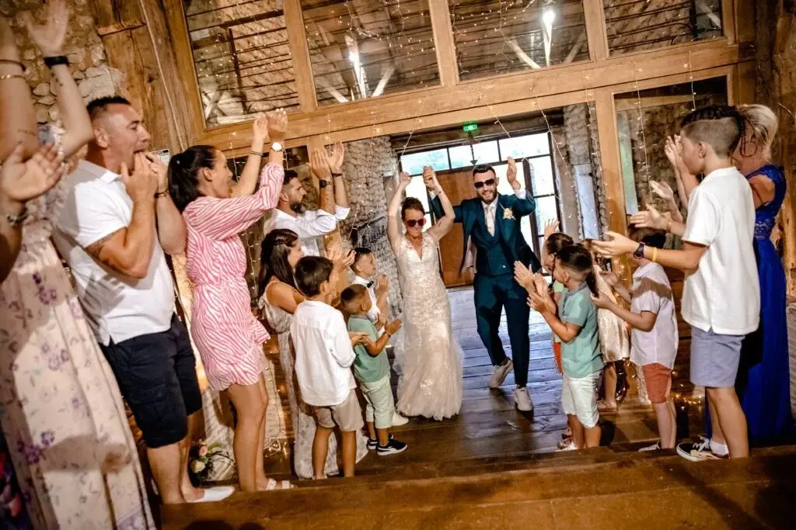
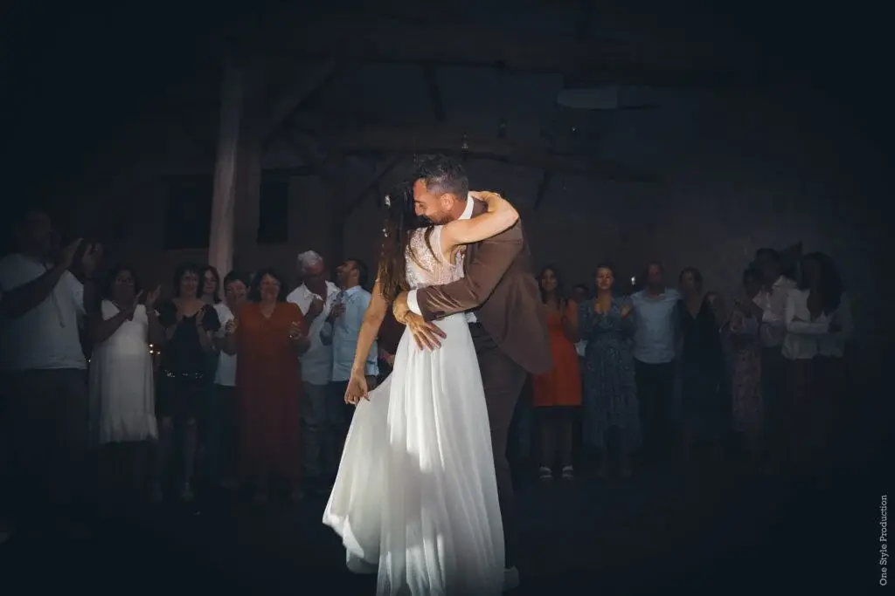
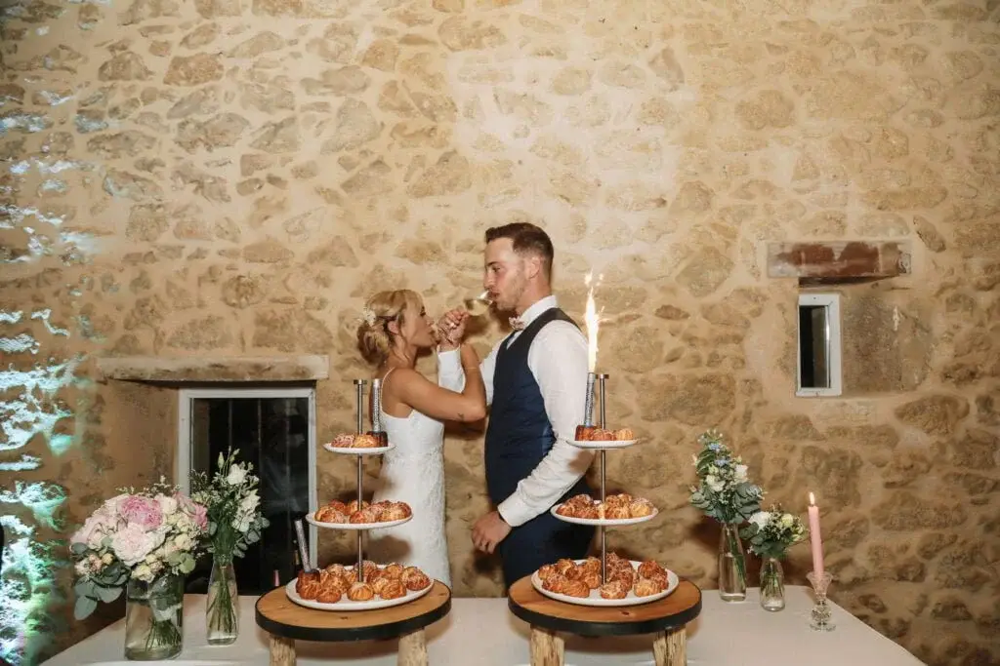

Pour un mariage réussi, il vous faut : des mariés heureux, un traiteur succulent, une salle de réception décorée, des fleurs en abondance, des invités en pleine forme, et bien sûr, une ambiance festive ! Car en matière d’ambiance, rien n’égale la musique.
Pourquoi bien choisir sa musique ?
L’entrée des mariés dans la salle du banquet demeure l’un des moments les plus attendus et mémorables du mariage. Pour créer une ambiance inoubliable, il est impératif de choisir soigneusement la musique qui accompagnera ce moment unique. Alors que la cérémonie d’engagement est un moment remplie d’émotion, l’entrée des mariés doit être festive puisque que c’est cette danse qui donnera le ton pour le reste de la soirée. Il est donc essentiel de sélectionner une musique avec du punch qui donnera la pêche à vos invités et les mettra dans l’ambiance de la fête.
Voici donc ma sélection des 27 chansons incontournables pour votre entrée de mariage !

27 tubes incontournables pour son entrée de mariage
Intemporel
Pop
1. « Can’t Take My Eyes Off You » - Gloria Gaynor
Une chanson classique et romantique qui évoque le regard amoureux entre les mariés.
8. « Don’t Worry » - Madcon
Une musique entraînante avec des influences reggae pour une entrée décontractée.
2. « You’re the One That I Want » - Grease Soundtrack
Une option ludique et énergique pour une entrée pleine de bonne humeur.
9. « Can’t Stop the Feeling ! » - Justin Timberlake
Une chanson pop vibrante qui met tout le monde de bonne humeur.
3. « You’re The First, The Last, My Everything » - Barry White
Une balade soul pour une entrée en toute élégance.
10. « Uptown Funk » - Mark Ronson ft. Bruno Mars
Un hit moderne et entraînant pour une entrée dynamique.
3. « Gimme! Gimme! Gimme! » - ABBA
Un choix joyeux et festif pour un début de soirée animé.
11. « Happy » -Pharrell Williams
Une chanson joyeuse qui ajoute une note positive à l’événement
4. « This Old Heart Of Mine » - The Isley Brothers
Une chanson entraînante qui apporte une touche vintage et dynamique.
12. « I Gotta Feeling » - The Black Eyed Peas
Un tube festif qui annonce une soirée mémorable.
5. « I Wanna Dance With Somebody » - Whitney Houston
Un classique pop qui met tout de suite dans l’ambiance festive.
13. « Shut Up and Dance » - WALK THE MOON
Une option énergique et dansante pour une entrée pleine de vie.
6. « Aretha Franklin » - Think
La voix puissante d’Aretha Franklin pour une entrée pleine de caractère.
14. « Can’t hold us » - Macklemore
Une chanson dynamique qui donne le ton à une entrée pleine d’énergie.
R&B/Soul
Made In France
15. « Love on Top » - Beyoncé
Une chanson d’amour rythmée qui crée une atmosphère joyeuse.
21. « Baby I’m Yours » - Breakbot
Une option rétro et élégante pour une entrée pleine de charme.
16. « We found love » - Rihanna
Un morceau énergique et romantique pour un moment inoubliable.
22. « A Kele Nta » - MHD
Un choix moderne et entraînant pour une touche française dans la playlist.
17. « Crazy in love » - Beyoncé
Un classique de Beyoncé pour une entrée pleine de passion.
23. « This Girl » - Kungz
Une reprise entraînante qui apporte une touche électro à l’événement.
18. « Signed, Sealed, Delivered (I’m Yours) » - Stevie Wonder
Une chanson pleine de positivité pour une entrée pleine d’enthousiasme.
24. « Sapés comme jamais » - Maître Gims ft. Niska
Une chanson dynamique avec une vibe urbaine pour une entrée pleine de style.
19. « Isn’t she lovely » - Stevie Wonder
Une ballade douce et romantique pour un moment tendre.
25. « One More Time » - Daft Punk
Un classique électro qui ajoute une note moderne à la playlist.
20. « I’m Coming Out » - Diana Ross
Une chanson emblématique pour une entrée pleine de confiance et de style.
26. « Happy » - C2C
Une musique parfaite pour une ambiance et une entrée festive.
27. « When Love Takes Over » - David Guetta
Une collaboration pop-électro pour une entrée pleine d’énergie.

Quelles chansons choisir pour les autres moments clé ?
Cependant, au-delà de l’entrée des mariés en salle, la journée d’un mariage est ponctuée de moments clé où le choix de la musique joue un rôle déterminant et offre une opportunité unique de créer des souvenirs.
Au cours de la cérémonie, où l’amour est à l’honneur, le choix des chansons à son importance. Des mélodies douces, comme « A Thousand Years » de Christina Perri ou « Unchained Melody » des Righteous Brothers, peuvent transformer ces instants en souvenirs inoubliables. De même, l’échange des vœux et des alliances au cours de la cérémonie laïque ou religieuse est un moment clé de votre journée. La musique a son impact, mais c’est l’émotion que vous dégagerez qui rendra cette cérémonie unique.
L’ouverture du bal, souvent considérée comme le moment clé de cette journée, nécessite une sélection réfléchie. C’est aussi l’occasion pour vous de vous retrouver tous les deux sous le regard de vos invités. La chanson choisie doit donc faire écho à votre histoire et votre parcours marquant ainsi le début de cette nouvelle aventure en tant que mari et femme. Mais la première danse n’a pas forcément besoin d’être protocolaire. Lâcher la valse pour faire place à la salsa, faire une chorégraphie avec vos témoins ou danser sur un medley de plusieurs musiques sont des alternatives à l’ouverture de bal classique.
Après toutes ces cérémonies, place au dancefloor ! Le mariage est l’occasion de faire la fête avec vos proches et des moments tels que le lancer du bouquet et la coupe du gâteau réclament des chansons entraînantes prêtent à mettre tout le monde dans une ambiance festive. Des morceaux comme « Celebration » de Kool & The Gang ou « Sugar » des Maroon 5 peuvent animer l’atmosphère et amener vos invités à se joindre à vous sur la piste de danse et célébrer votre bonheur.
En résumé, chaque instant clé de la journée offre une occasion unique de créer des souvenirs. Choisir des chansons spécifiques à chaque moment, non seulement pour leur sonorité, mais aussi pour leur signification personnelle, contribue à créer une expérience musicale complète et émotionnellement riche tout au long de votre mariage.

Mon rôle ?
En tant que wedding planner basé en région bordelaise, ma mission consiste à vous accompagner dans cette journée inoubliable en assurant une coordination sans faille le jour J. Mon rôle va être de comprendre vos aspirations en termes d’ambiances pour la cérémonie et la réception, orientant ainsi mes conseils vers des choix musicaux qui reflètent votre style.
L’ouverture de bal ou la découpe de gâteau sont des moments clé où le timing à son importance. Ma responsabilité va donc être de superviser les prestataires afin de garantir une exécution sans faille de votre mariage.